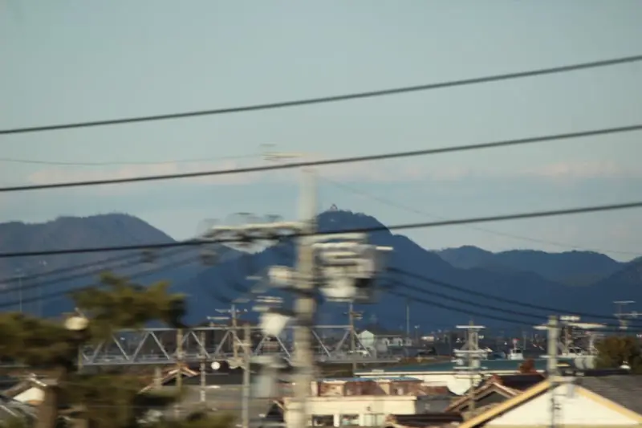

- Section
- Gifu-Hashima → Maibara
- Seat side
- Seat E · mountain side
- Timing
- About 106 minutes after leaving Tokyo on a Nozomi train
- Photos
- 2 photos
What is Gifu Castle and why is it famous?
Gifu Castle stands on the summit of Mt. Kinka (formerly Mt. Inaba), rising sharply beside the Nagara River. Its origins trace back to a Kamakura-era fortress; in the Sengoku era Saito Dosan, feared as the 'Viper of Mino,' developed it into his main stronghold. In 1567, Oda Nobunaga of neighboring Owari captured Inabayama Castle, renamed the town 'Gifu' and made this his base for national unification. The 'Tenka Fubu' (rule the realm through military force) seal he began using around this time is one of Japanese history's most iconic emblems. Though the castle was decommissioned in the early Edo period, the silhouette of Mt. Kinka and its hilltop keep remains a landmark of the modern city.
More: Gifu City: Gifu CastleZusshi: Castles from the Shinkansen (Japanese only)@letus10: Gifu Castle window article (Japanese only)
If you are traveling from Tokyo toward Shin-Osaka, start watching the Seat E · mountain side window as you approach Gifu-Hashima → Maibara. If you are traveling toward Tokyo, the order is reversed.
The keep you see today, and how to find it
The keep you see today was rebuilt in 1956 in reinforced concrete as a modern reconstruction, housing a small museum and observation deck. It is not a faithful restoration, but its position on Mt. Kinka has long defined the popular image of Gifu Castle. A ropeway from Gifu Park at the foot of the mountain runs to the summit, from which the Nobi Plain, the Kiso Three Rivers and even Mt. Ibuki come into view.
From the Shinkansen, after Gifu-Hashima and around the crossing of the Kiso Three Rivers (Kiso, Nagara and Ibi), look northward from the Seat E side for Mt. Kinka. The hilltop keep appears very small and blends easily into buildings, haze, or seasonal air. Look first for a low, near-triangular mountain, then a small white dot at its top. On cloudy, hazy or yellow-dust days, even a visible mountain may not reveal the keep itself.
The castle is much more prominent from the Tokaido Main Line, other JR conventional lines, and the Meitetsu Kakamigahara Line. This page also includes a reference photo from those closer directions. From the Shinkansen it is much smaller: look for a dot-like keep beyond the bridge and the city. If you want to see Gifu Castle up close, it is well worth a connecting trip.
Reference: Gifu Castle from a closer conventional-line view
Gifu Castle is very far from the Shinkansen and appears only as a small speck. The photo below is a closer reference view from a JR conventional-line direction, included to show which mountain and keep you are trying to identify.

Location at a glance
Open mapSwitch between the spot and the Shinkansen viewpoint.
How to catch Gifu Castle
1. Choose the window first
As you approach Gifu-Hashima → Maibara, start watching from Seat E · mountain side. Use Live Guide while riding, or the map on this page before you board.
The clearest view lasts only a few seconds. Decide the seat side and window direction before it arrives rather than reaching for your camera late.
2. Highlights
Around the Kiso Three Rivers crossing, look northward on the Seat E side for the most prominent low mountain. If you can pick out a white dot at the top of its near-triangular silhouette, that is Gifu Castle. Clear days, winter to early spring, and morning light give the best chance.
Gifu Castle in photos

 Related
Hikone Castle
Related
Hikone Castle
 Related
Nangu Taisha Grand Torii
Related
Nangu Taisha Grand Torii
 Related
CELLOTAPE Wall Sign
Related
CELLOTAPE Wall Sign